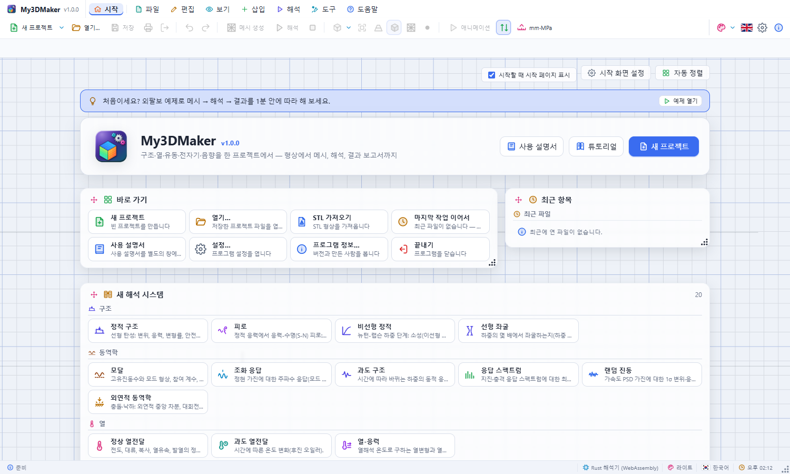
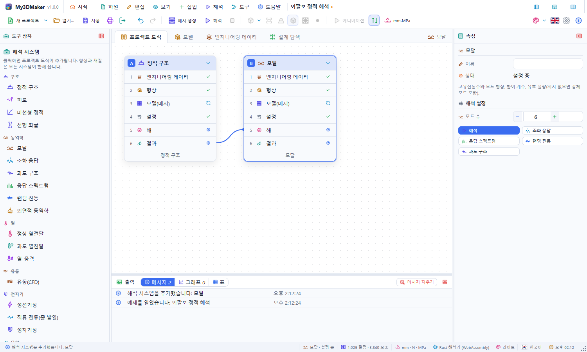
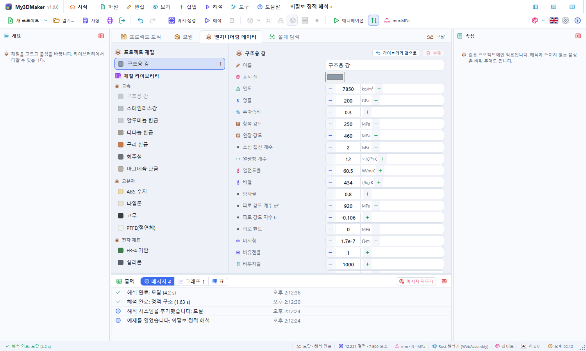
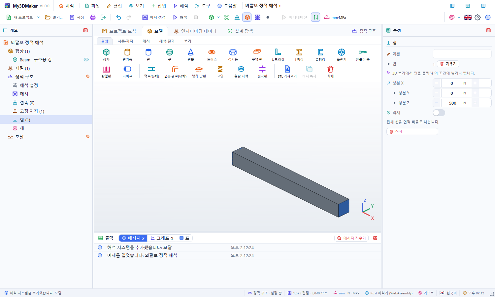
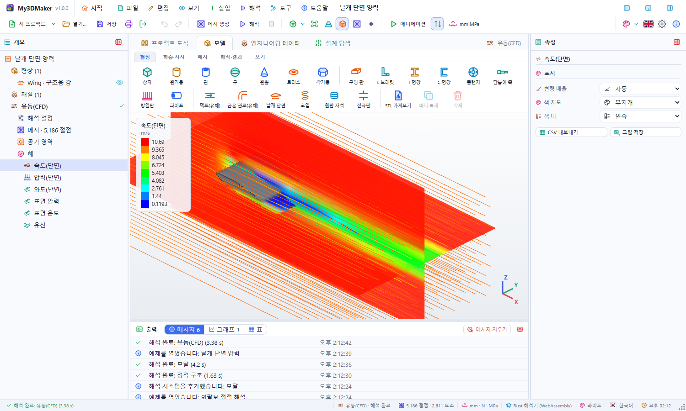

My3DMaker 사용 설명서
My3DMaker는 부품과 조립품을 3D로 해석하는 프로그램입니다. 구조(정적·모달·좌굴·조화·과도·응답 스펙트럼·랜덤 진동·피로·비선형·외연적 동역학), 열(정상·과도·열응력), 유동(CFD, 열전달 포함), 전자기(정전기장·직류 전류·정자기장), 음향(모달·조화), 위상 최적화와 설계 탐색을 한 프로젝트에서 다룹니다.
해석기는 Rust로 작성되어 있습니다. 데스크톱 앱(Windows·macOS·Linux)에서는 네이티브로, 웹 브라우저에서는 같은 코드를 WebAssembly로 컴파일해 실행합니다. 결과는 두 환경에서 같습니다.
1. 화면 구성

- 메뉴 표시줄: 시작, 파일, 편집, 보기, 삽입, 해석, 도구, 도움말. 오른쪽 끝에 창 단추가 있습니다.
- 도구 모음: 새 프로젝트, 열기, 저장, 인쇄, 내보내기, 되돌리기, 메시 생성, 해석, 중지, 보기 방향, 표시 방식, 애니메이션, 단위계, 테마, 언어, 설정, 프로그램 정보. 창이 좁으면 이름이 숨고 아이콘만 남습니다.
- 작업 탭: 프로젝트 도식, 모델, 엔지니어링 데이터, 설계 탐색.
- 왼쪽 패널: 개요(모델 탭) 또는 도구 상자(프로젝트 탭).
- 오른쪽 패널(속성): 선택한 항목의 속성과 설정(치수, 재질, 하중 값, 해석 설정, 결과 표시 방식).
- 아래 패널(출력): 메시지, 그래프, 표.
- 패널마다 머리에 아이콘·제목·접기 단추가 있고, 접으면 펴기 단추와 세로 제목만 남습니다. 메뉴 표시줄 오른쪽(창 단추 왼쪽)의 세 단추로 왼쪽·아래·오른쪽 패널을 한 번에 접고 펼 수 있습니다. 패널 사이 경계선을 끌어 너비와 높이를 바꿉니다.
- 오른쪽 클릭 메뉴는 패널마다 다릅니다: 개요 항목(이름 바꾸기, 재질, 숨기기·이 바디만 보이기, 억제, 복제, 삭제, 해석, 연결 추가 …), 도구 상자, 프로젝트 도식, 속성, 출력(메시지 복사, 그래프 저장·자료 복사, 표 복사), 3D 보기(바디 선택·숨기기, 이 면에 조건 추가, 면 넣기·빼기, 보기 방향, 표시 방식).
- 상태 표시줄: 진행 상황, 활성 해석 시스템, 메시 크기, 단위계, 해석기 종류, 테마, 언어, 시계. 오른쪽 아래 모서리를 끌어 창 크기를 바꿉니다.
2. 시작 화면
시작 화면의 카드는 손잡이로 옮기고 모서리로 크기를 바꿀 수 있습니다. 자동 정렬은 처음 배치로 되돌립니다.
- 바로 가기: 새 프로젝트, 열기, STL 가져오기, 이어서 작업, 사용 설명서, 설정, 프로그램 정보, 끝내기
- 최근 항목: 최근에 연 프로젝트
- 새 해석 시스템: 물리 분야별 20가지 해석. 누르면 새 프로젝트에 그 시스템이 추가됩니다.
- 예제 프로젝트: 31개. 각 예제는 형상, 재질, 하중과 지지가 모두 설정되어 있어 바로 해석할 수 있습니다.
- 배경: 움직이는 배경의 종류와 속도
3. 프로젝트 도식

해석 시스템은 블록으로 표시됩니다. 블록의 칸은 작업 순서입니다.
- 엔지니어링 데이터: 재질
- 형상: 바디
- 모델(메시): 요소 크기와 차수
- 설정: 해석 설정, 하중과 지지
- 해: 해석 실행
- 결과: 결과 보기
칸 오른쪽의 표시는 상태입니다. 초록 체크는 완료, 회색 물음표는 아직, 노란 화살표는 다시 해석이 필요한 상태, 빨간 표시는 오류입니다.
- 왼쪽 도구 상자에서 해석 시스템을 누르면 추가됩니다.
- 블록 머리의 ▾ 또는 오른쪽 클릭 메뉴에서 연결 추가를 고르면 그 시스템의 하중과 지지를 이어받는 시스템이 오른쪽에 생기고 화살표로 이어집니다. 예: 정적 → 좌굴·피로·비선형, 모달 → 조화·과도·스펙트럼·랜덤, 열 → 열응력.
- 형상과 재질은 모든 시스템이 함께 씁니다.
4. 형상
모델 탭의 리본 형상에서 바디를 추가합니다.
- 기본 도형: 상자, 원기둥, 관, 구, 원뿔, 토러스, 각기둥
- 부품: 구멍 판, L 브래킷, I 형강, C 형강, 플랜지, 단붙이 축, 방열판, 파이프
- 유체·전자기: 덕트, 굽은 관로, 날개 단면, 코일, 원판 자석, 전극판
- STL 가져오기: 닫힌 삼각형 메시(이진·텍스트)
개요에서 바디를 고르면 세부 정보에 이름, 재질, 억제, 국부 요소 크기, 치수, 위치와 회전이 나옵니다. 값은 − / + 단추나 직접 입력으로 바꿉니다. 눈 단추로 바디를 숨깁니다. 맞닿은 바디는 절점을 공유해 결합됩니다.
좌표는 Z가 위입니다. 길이는 mm입니다.
5. 엔지니어링 데이터

왼쪽에서 프로젝트 재질을 고르고 오른쪽에서 물성을 고칩니다. 라이브러리에는 금속, 고분자, 전자 재료, 자성 재료, 유체 등 21가지 재질이 있습니다. 값은 이 프로젝트에만 적용됩니다.
| 해석 | 쓰는 물성 |
|---|---|
| 구조 | 밀도, 영률, 푸아송비, 항복 강도, 인장 강도, 소성 접선 계수 |
| 피로 | 피로 강도 계수 σf′, 피로 강도 지수 b, 피로 한도 |
| 열 | 열전도율, 비열, 열팽창 계수, 방사율 |
| 전기 | 비저항, 비유전율 |
| 자기 | 비투자율 |
| 유동·음향 | 밀도, 점성 계수, 음속, 부피 팽창 계수 |
6. 메시
개요의 메시를 고르면 요소 크기, 요소 차수, 최대 절점 수를 정합니다. 요소 크기 0은 자동(모델 크기의 1/25)입니다. 메시 생성을 누르면 메시를 만들고 절점·요소 수, 요소 품질, 종횡비와 품질 분포를 보여 줍니다.
- 1차 (TET4): 빠릅니다. 외연적 동역학과 정자기장은 1차 요소를 씁니다.
- 2차 (TET10): 응력과 진동수가 더 정확합니다. 곡면에서는 중간 절점이 표면에 맞춰집니다.
메시는 직교 격자를 사면체로 나누고 경계 절점을 표면으로 옮겨 만듭니다. 축에 나란한 면은 정확히 맞춰지고 곡면은 요소 크기에 따라 근사됩니다.
7. 하중과 지지

리본 하중·지지에는 활성 시스템에 맞는 조건만 나옵니다. 조건을 추가하면 개요에서 선택된 상태가 되고, 3D 보기에서 면을 클릭하면 그 면이 조건에 들어가거나 빠집니다. 바디가 대상인 조건은 세부 정보에서 바디를 고릅니다.
| 분류 | 조건 |
|---|---|
| 지지 | 고정, 변위, 마찰 없는 지지, 탄성 지지 |
| 하중 | 힘, 압력, 모멘트, 베어링 하중, 중력, 가속도, 회전 속도, 열 조건 |
| 외연적 | 초기 속도, 강체 벽 |
| 열 | 온도, 대류, 열유속, 열 유량, 복사, 내부 발열, 발열량, 바디 온도 |
| 전기 | 전압(면 또는 바디), 전류, 체적·표면 전하 |
| 자기 | 코일(원형·직선), 영구 자석 |
| 음향 | 진동 속도, 음압, 흡음 |
| 유동 | 입구, 출구(내부 유동) |
조건의 색: 지지 파랑, 하중 빨강, 열 주황, 전기 보라, 자기 청록, 음향 분홍, 유동 초록. 선택한 조건은 진한 파랑입니다.
접촉: 맞닿은 바디는 기본으로 결합됩니다. 접촉을 추가하면 결합, 분리 없음, 마찰 없음, 거침, 마찰을 고를 수 있습니다. 마찰 없음과 마찰은 비선형 정적 해석에서 계산됩니다. 접촉 자동 찾기는 메시에서 맞닿은 바디 쌍을 찾습니다.
8. 해석
도구 모음의 해석(F5)은 활성 시스템을, 모두 해석은 프로젝트의 모든 시스템을 풉니다. 진행 창과 상태 표시줄에 단계(메시, 행렬 조립, 방정식 풀이, 고유값 풀이 …)와 진행률이 나오며 중지로 멈출 수 있습니다.
해석 방법 요약:
| 시스템 | 방법 |
|---|---|
| 정적·열응력 | 4·10절점 사면체, 전처리 켤레 기울기법(불완전 촐레스키 + 강체 운동 조대 공간) |
| 모달·좌굴·음향 모달 | LOBPCG 고유값 풀이 |
| 조화·스펙트럼·랜덤 | 모드 중첩 |
| 과도 구조 | 뉴마크 평균 가속도 |
| 비선형 | 뉴턴-랩슨, J2 소성, 전체 라그랑지 대변형, 벌칙 접촉, 하중 단계 이분 |
| 외연적 | 중앙 차분, 공회전 사면체, 소성, 요소 제거 |
| 열 | 정상·후진 오일러, 복사는 반복 |
| 유동 | 직교 격자 투영법, 반라그랑지 대류, 와점성 난류, 부력, 공액 열전달 |
| 전자기 | 정전기장·직류: 절점 요소, 정자기장: 에지 요소 |
| 위상 최적화 | SIMP, 민감도 필터, 최적성 조건 |
9. 결과

개요 해 아래의 결과를 고르면 3D 보기에 등고선, 색 막대, 최대·최소 표시가 나옵니다. 면을 클릭하면 그 점의 값을 보여 줍니다.
- 변형 배율: 자동, 실제 배율, 변형 없음, ×10, ×100, ×1000
- 색 지도: 무지개, 비리디스, 냉온, 열화상, 흑백 / 색 띠: 연속, 8, 12, 16
- 애니메이션: 모드 형상, 조화 응답, 과도·외연적 프레임, 과도 온도
- 단면: 유동과 전자기장은 영역 가운데의 단면에 표시되고, 유동은 유선도 그립니다.

아래 패널의 그래프는 주파수 응답, 위상, 변위·온도 이력, 하중-변위 곡선, 에너지, 컴플라이언스 수렴, 유동 잔차, 고유진동수 막대를 보여 줍니다. 표는 모드(진동수, 유효 질량, 누적 비율), 좌굴 배수, 반력, 열 방출, 항력·양력, 전자기력, 단자 전류, 요약 값입니다.

10. 설계 탐색

- 매개변수 추가…에서 치수나 하중 값을 고르고 최소·최대·수준을 정합니다.
- 방법(중심 합성 설계, 완전 요인, 라틴 하이퍼큐브)과 목표 출력, 최소화·최대화를 고릅니다.
- 실험 계획 실행을 누르면 설계점마다 활성 시스템을 풀고 출력을 표로 모읍니다.
- 이어서 2차 반응 표면을 맞추고 R², 민감도 막대, 최적 후보와 앞 두 매개변수의 반응 지도를 보여 줍니다.
11. 파일, 내보내기, 인쇄
- 프로젝트 파일:
.my3d(JSON). 결과는 저장되지 않으며, 다시 열면 시스템이 다시 해석 필요 상태가 됩니다. - 내보내기: 보고서(HTML), CSV(결과 값과 그래프 자료), 그림(PNG), 위상 최적 형상(STL)
- 보고서 인쇄(Ctrl+P): A4 보고서(현재 결과 그림, 색 막대, 결과 요약, 모델, 조건, 그래프)를 미리 보고 인쇄하거나 PDF로 저장합니다.
12. 설정
설정 창(Ctrl+,)의 해석 탭: 단위계(mm·N·MPa 또는 SI), 색 지도, 색 띠, 변형 배율, 변형 전 윤곽, 최대·최소 표시, 애니메이션 속도, 단면 불투명도, 기본 요소 차수, 3D 표시 방식. 그 밖에 일반, 모양(테마 40여 종과 사용자 테마), 글꼴, 시작 화면 설정이 있습니다.
13. 단축키
| 키 | 동작 |
|---|---|
| Ctrl+N / Ctrl+O / Ctrl+S | 새 프로젝트 / 열기 / 저장 |
| Ctrl+Shift+S | 다른 이름으로 저장 |
| Ctrl+Z / Ctrl+Y | 되돌리기 / 다시 실행 |
| Delete | 선택 항목 삭제 |
| Ctrl+D | 바디 복제 |
| F5 | 해석 |
| F | 전체 보기 |
| Ctrl+P | 보고서 인쇄 |
| F1 | 사용 설명서 |
| Esc | 애니메이션 멈춤 |
마우스: 왼쪽 끌기 회전, 오른쪽·가운데 끌기 이동, 휠 확대·축소, 클릭은 면 선택.
14. 정확도와 한계
- 예제의 외팔보 처짐, 고유진동수, 좌굴 하중은 보 이론과 5% 이내로 맞습니다(자동 시험으로 확인).
- 유동은 균일 직교 격자로 계산합니다. 경계층을 세밀하게 풀지 않으므로 항력 계수는 경향 비교용으로 쓰세요.
- 정자기장은 선형 재질(비투자율 일정)입니다.
- 웹 판은 한 스레드의 WebAssembly로 실행되어 데스크톱보다 2~3배 느립니다. 큰 모델은 데스크톱 앱을 쓰세요.